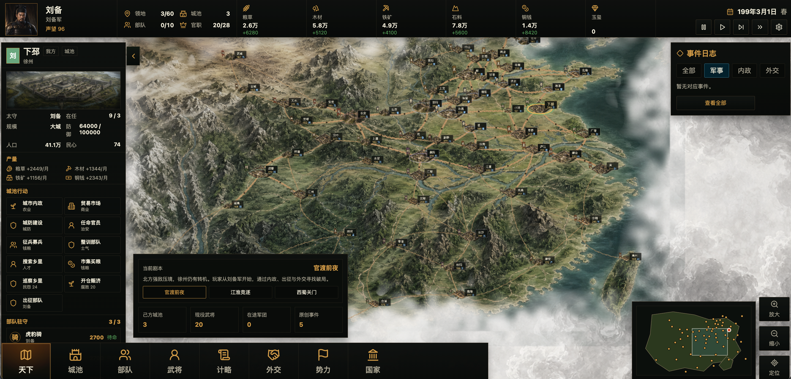

创意名称与介绍
PROJECT OVERVIEW
滚滚长江东逝水，浪花淘尽英雄。是非成败转头空，青山依旧在，几度夕阳红。
—— 杨慎《临江仙》想解决什么问题
当前市面上的三国题材游戏，大多侧重于快节奏的卡牌对战或简单的策略对抗，缺乏对三国历史深度与厚重感的真正还原。玩家难以在虚拟世界中体验到那个群雄逐鹿、风云变幻时代的真实历史氛围，更无法以一个君主的身份真正参与到历史的洪流之中。
灵感来源
作为一个从小熟读《三国演义》、痴迷于那段波澜壮阔历史的三国爱好者，我一直梦想能有一款游戏，能让我真正代入到曹操、刘备、孙权这样的君主视角，体验治国理政、招兵买马、合纵连横的全过程。日本光荣公司的《三国志》系列虽然经典，但毕竟是外国人制作的三国——我想做一款真正属于中国人自己的三国志，用我们熟悉的水墨美学、我们理解的历史逻辑、我们认同的文化情怀，来重新诠释这段千年史诗。
产品形态
一款基于Web浏览器的大型历史推演模拟游戏，采用水墨国风美术风格，玩家可以选择三国时期的不同君主身份，通过内政、军事、外交、人才等系统，在高度还原的历史地图上进行策略推演，体验从黄巾之乱到三国归晋的完整历史进程。
目标用户及痛点
TARGET AUDIENCE
面向哪些用户
- 三国历史爱好者：对三国历史有浓厚兴趣，渴望深入了解那个时代的政治、军事、文化
- 策略游戏玩家：喜欢深度策略思考，享受运筹帷幄、决胜千里的成就感
- 国风文化受众：热爱中国传统文化，对水墨美学、古典音乐有审美追求
- 历史教育群体：教师、学生等希望通过互动方式学习历史知识的人群
使用场景
当前痛点
| 痛点类型 | 具体描述 |
|---|---|
| 历史还原度不足 | 现有游戏多为简化版三国，缺乏对历史事件、人物关系、地理环境的深度还原 |
| 文化表达缺失 | 日系或欧美风格的三国游戏无法真正传达中国传统文化的韵味与精髓 |
| 策略深度不够 | 多数游戏偏向快餐化，缺乏需要长期思考和规划的策略深度 |
| 代入感薄弱 | 玩家难以真正代入君主角色，缺乏"我就是这个时代参与者"的沉浸体验 |
| 学习门槛高 | 传统历史学习方式枯燥，缺乏互动性和趣味性，难以吸引年轻群体 |
价值与意义
VALUE & SIGNIFICANCE
社会价值：文化传承与历史教育
三国历史是中国文化中最璀璨的篇章之一，但如何让年轻一代真正理解并热爱这段历史，是一个值得深思的课题。《三国志 · 天下归心》不仅是一款游戏，更是一座连接过去与未来的文化桥梁。通过沉浸式的水墨美学和深度的策略推演，玩家在游戏中自然而然地学习历史知识、理解传统文化、感受先贤智慧。
我们相信，当年轻人通过游戏记住了赤壁之战的谋略、理解了诸葛亮鞠躬尽瘁的精神、感受到了曹操"对酒当歌"的豪情时，文化传承就不再是枯燥的说教，而是一次次心动的体验。
商业价值：细分市场的深度挖掘
三国题材在全球范围内拥有数亿核心粉丝，但高品质、深度策略、纯正国风的三国游戏仍然是一个被严重低估的蓝海市场。当前市场以手游快餐化产品为主，真正满足核心玩家需求的精品网页/PC端游戏稀缺。
通过免费游玩+外观付费+剧本扩展的商业模式，结合社区运营和内容更新，项目具备长期可持续的商业潜力。同时，水墨风格的独特美术定位，也能形成强烈的品牌辨识度，在竞争激烈的游戏市场中脱颖而出。

游戏主界面 — 水墨风格大地图，包含城市、武将、资源、事件日志等核心系统
核心特色
KEY FEATURES
我们的愿景
一千八百年前，群雄并起，英雄辈出，那是一个属于中国人的传奇时代。
今天，我们希望用数字技术重现那段辉煌，让每一位玩家都能在游戏中找到属于自己的三国梦。
做一款中国人自己的三国志——这不是一句口号，而是一份承诺。
用我们的美学，讲我们的故事，传我们的文化。
让水墨丹青在屏幕上流淌，让历史长河在指尖奔涌。
这，就是《三国志 · 天下归心》。
报名帖填写指南
REGISTRATION GUIDE
| 填写项 | 填写内容 | 说明 |
|---|---|---|
| 【标签】 | 生活娱乐 | 四选一：生活娱乐 / 学习工作 / 社会服务 / 硬件交互 |
| 【标题】 | 生活娱乐 — 三国志 · 天下归心 | 报名赛道 + 创意名称 |
| 正文 Part 1 | 创意名称 + 创意介绍 | 痛点、动机、产品形态（见上文01节） |
| 正文 Part 2 | 目标用户及痛点 | 用户群体、使用场景、当前痛点（见上文02节） |
| 正文 Part 3 | 价值与意义 | 社会价值 + 商业价值（见上文03节） |
| 正文 Part 4 | 附带 HTML 文件 | 上传本创意方案 HTML 文件到社区 |